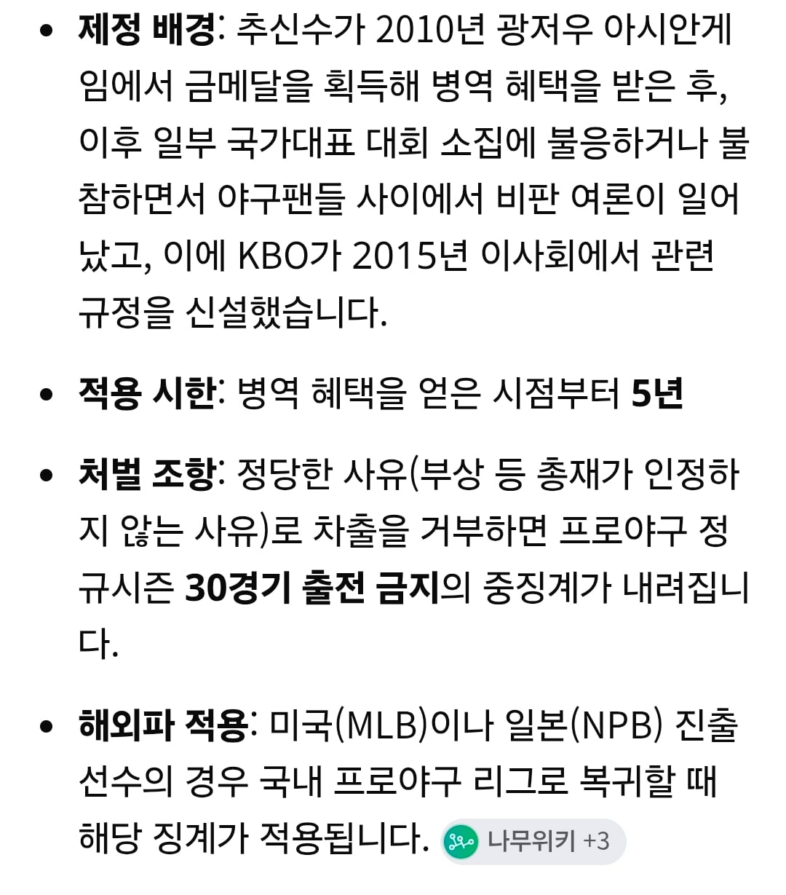

이걸 무시하기에는 이미 전례가 있는데...

한명의 트롤짓으로 진짜 법이 만들어졌다는거
이걸 무시하기에는 이미 전례가 있는데...

한명의 트롤짓으로 진짜 법이 만들어졌다는거
누차 엘리트체육 지원은 좀 빠져줘야하지않나
이런거 예전에는 흐지부지되었는데 bts때 이후에 터진거라 사람들 시각이 좀 많이바뀌어서 어찌될진 모르겠네
국위선양은 BTS가 더 했음
엘리트 체육할 돈으로 동네마다 수영장이나 더 만들어라
쓸대없는 돈 낭비하지말고
엘리트 운동을 이제 나라가 챙겨줘야할 필요가 없다고는 생각하는데 군대도 건강한 남자한테만 부과된 세금이라 좆같은 감정임. 엘리트 선수들을 위한 예산 싹 빼서 군대 모병제로 바꾸자